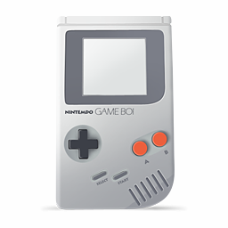
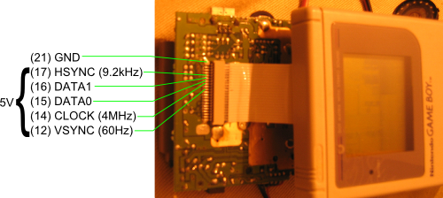
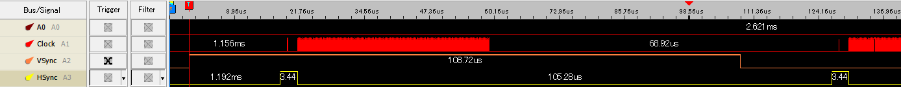
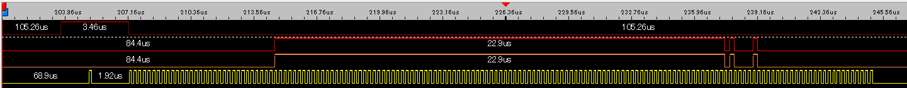

Summary
Idea is to use a gameboy to display time. If possible, even allow the gameboy to still play games (would be great). Why? Well... because it's nice, vintage, unique. And if you're fed up with my nth project with clock (I won't blame you) as long as we control the screen you can connect to internet and read the news, tweets, or show the weather info (though looking by the window works too). That's most likely how it would end up anyway. But you can't deny the definite geekiness and uniqueness (at last a good argument) of the result.How to
Among the multiple options that exist I see two, and I will most likely try them in the following order:(1) Hacking the screen signal
That might sound a bit convoluted but even without a cartridge the gameboy shows the black boc and the does the da-ling sound. Means cpu runs, does a bit of ROM magic and what we want: it displays stuff on the screen. Means it draws the screen at 60Hz! There are a few signals involved, but basically:- Data0 and Data1: because each pixel is a 4 color pixel
- Clock: for the pace
- Horizsyn: when you change line
- Vertsyn: when you change page
(2) Making my own "game"
Hardware is doable, I saw some samples. You need a pcb with the correct padding (can be found on internet or made with eagle), put an eeprom on it (like here), setup a tool chain and uploader and write a small program. That looks doable, but requires much more preparation than the bitbanging approach of injecting signal.[Option 1] Hacking the screen signal
Theory
Invaluable resource : https://flashingleds.wordpress.com/2010/10/26/intercepting-the-gameboy-lcd/
Another one http://www.bradsprojects.com/gameboy-to-vga-converter-in-progress/
And special thanks to this gentleman who inversed his gameboy display and kindly shared his technique http://blog.gg8.se/wordpress/category/mods/
Some other guys who did again (so much for my hoped originality):
Screen details
| lines |
160 px |
| pixels per line |
144 px |
| freq |
60 Hz |
| lines per sec |
9,600 lines/sec |
| pixels per sec |
1,382,400 px/sec |
| image size |
23,040 px |
| one pixel info |
2 bits |
| one image size in mem |
5,760 bytes |
Modus operandi
- Begining of screen: every 60, sacrifice one to do background job (get latest time info, prepare the display somewhere in memory). Other 59 times:
- Start of line : get ready to spit the line data: get the memory point at the right place, get the first byte
- For each pixel of the line: change the status of D0/D1 and fetch next byte of data when needed
Hardware
Gameboy side
(The connector for the screen ribbon is this one)- Cut carefully the data0 and data1 lines (add image here), and get 4 wires : 2 original ins from the CPU, 2 outs to the screen
- Solder wires to get the clock, vsync an hsync signals (should be all for now)
- Redirect all the signal outside the GB for the time being and avoid stress on the connectors. I will be easier to connect to the development display module.
Sample of Data1, Data0, Clock and hSync

Sample of one VSync: vsync is up for a looooong time (the whole first line) and you can detect as when the Clock ↓ AND HSync up AND VSync up

Top-bottom: hsync, data0, data1, clock. That's one line of the black box displayed when Gameboy is on with no cartridge. Look at data lines: a little white, all black, and 2 black pixels (part of the ® symbol).
Display control module
SpeedWe need a bare minimum of give or take1.5 Mhz (60 Hz x 160 lines x 144 px/lines = 1,382,400 instructions). But each instructions will require preparation, just to get the pixel color out of memory if we put a static image, some control logic and yes, read the time from the RTC. Let's say that we sacrifice the last image per second to read the RTC and do some magic preparation, it gives us 16 ms of time to do background tasks. At 4Mhz that's more than 66k%20 instructions, that's more than enough. So we can start with an internal oscillators RC of 8MHz.
CPU
Hum, you guessed it, it will be an ATmel because (1) that's the one I feel more comfortable with, plus I have lots of them (2) I just need 3 interrupts input and 2 pins output, that sounds like a mission for attiny2313. Since I won't be able to reuse the VRAM of the gameboy, I will wether generate the image on the fly or use a bit of RAM on the side : generate and store during the 60th frame and just fetch and draw the rest of the time.
One image in 4 levels of gray is 5,760 bytes.
Maybe this RAM chip: 300 JPY for 5 of them holding 256kb http://akizukidenshi.com/catalog/g/gI-01461/
Software
Let's work with interrupts: clock, hsync, vsync. What crystal speed required? We saw earlier it needs 1.5 Mhz min, so let's go with 16Mhz and we'll check how to optimize later. Main point here is to go with interrupts so that the program can do other stuffs while it still paints the screen in the background. We could wire the buttons, the sound and even make games (everybody catches the irony of such a convoluted solution just to avoid writing a Gameboy game?)... so we'll go with a simple "read the RTC" as a start. We'll need also to generate the image in memory and store it there.[After theory now experimentation]
... and that's where things go south. You saw it coming? Not me, though I should have had since I had the same problem with my SNES cabinet when I emulated the controllers: I don't have enough cycles!
We need to spit pixels at 1.5 MHz, let's say 2 for the calculation. CPU runs at 16 MHz so means I have a luxurious 8 cycle per pixel... FYI just going IN and OUT of an interrupt if 4 cycles, leaving 4 cycles per pixel... that's very short. I tried a hybrid version that is an interrupt for the line start and after is just timed as fast as possible, I get an image but "stretched" horizontally. Of course, I can't keep up so the screen reads many time the same data on the D0/D1 lines.
Not 100% dead end, but a big bump though.
TODO code on google code
[Option 2] Making custom cartridge with RTC
See dedicated project : Gameboy homebrew cartridge.But I'll keep some memo here. So here's the idea: * Sticking with 32k vanilla program (no fiddling with MBC chips) * Keep the program in the low 16k of the ROM * Capture a call to ANY high address > 16k and reply the current time. No logic, any address > 16k reply the time. Ergo the uC must keep the latest time on one of its 8bit port. To do that the idea is this: * Data bus is connected to a multiplexer non-inverter (two 4bits [[https://www.ti.com/product/CD74HC257|74HC257]]) that can show the ROM data bus or the uC "time" bus * The multiplexer switches depending on the address (like A15=H or a simple AND combo) * The uC checks the RTC every sec, get latest time, shows it on its 8bit "time" data port (QUESTION: HH:MM on 8bit num?) * According below chronograph there's 3 cycles for data read once bus is set (250ns*3) and 74HC257 has a setup time (input pins to output) of ~30ns at 25C/5V so no worries there.

Taken from [[https://github.com/Gekkio/gb-ctr|Game Boy: Complete Technical Reference]] (Annex C)
BOM
* 32k ROM * 74HC257 (SOIC) x2 * RTC chip (SMT) [TBD] * Microcontroller ATmel SMT [TBD] * Battery * AND circuit or transistor if simple logic for multiplexer switching logic (optional)Links
* [[https://www.insidegadgets.com/2018/04/18/building-a-2mb-mbc5-gameboy-cart-part-1-cpld-as-the-mbc-and-adding-flash-as-our-rom/|Different timing, address logic]] * [[https://gbdev.gg8.se/forums/viewtopic.php?pid=3625#p3625|read this, ignore old me posts below]][Option 3] Making game only and using Serial communication
Just got the idea now, December 2023, would you believe it? I could just make a serial device that would emulate a GB and return the time anytime asked. Nothing to change on the GB hardware or cartridge, or maybe solder a couple wires if I don't find GB serial connectors to sacrifice.Hardware
GB Color/DMG Link port pinout ([[https://westm.co.uk/arduino-game-boy-printer-emulator/|source]]):
Gameboy Original/Color Link Cable Pinout __________ | 6 4 2 | \_5__3__1_/ (looking at the cable) Arduino Pin Gameboy Link Pin unused Pin 1 : 5.0V D4 Pin 2 : Serial OUTPUT D3 Pin 3 : Serial INPUT unused Pin 4 : Serial Data D2 Pin 5 : Serial Clock (Interrupt) GND Pin 6 : GND (Attach to GND Pin) |
 //Pinout of the connector on a DMG PCB// |
Code
For the GB side: see [[https://github.com/AlanFromJapan/Gameboy/tree/master/Games/GameBoyClock|on Github]] * **GameBoyClock-emu**: small program that can send/receive on serial. Will be useful in the debug/development phase. * **GameBoyClock**: the program that will read serial and show timeHelpful links
* [[https://github.com/mofosyne/arduino-gameboy-printer-emulator]] * [[https://blog.gbplay.io/2021/05/29/Connecting-to-a-Game-Boy-Link-Cable-From-a-PC.html]] * [[https://blog.gbplay.io/2021/05/10/An-8-Bit-Idea_The-Internet-of-Game-Boys.html]] * [[https://github.com/Raphael-Boichot/PC-to-Game-Boy-Printer-interface]]Misc pointers
Internal
- Gameboy screen has details about the technicalities around the gameboy screen (hardware wise)
- Gameboy guts and programming in case I change my mind and just make a custom cartridge.
External
- Gameboy Pandocs http://problemkaputt.de/pandocs.htm